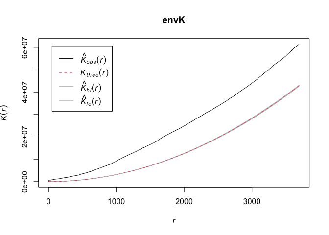

Point Pattern Analysis
GEO 200CN - Quantitative Geography
Professor Noli Brazil
The fundamental building blocks of vector or object data are points. As such, we start our journey into spatial data analysis by going through the basic methods for examining point patterns. This guide follows closely OSU Chapter 4. The objectives of the guide are as follows
- Learn spatstat package functions for setting up point data for analysis
- Learn first-order or density based measures for examining point patterns
- Learn second-order or distance based measures for examining point patterns
To help us accomplish these learning objectives, we will be examining crime in a nondescript city (sounds like the plot to a David Lynch movie).
Installing and loading packages
We’ll be using a couple of new packages in this lab. First, you’ll need to install them. The following code checks if you’ve already installed these packages before. If you haven’t, it will install them.
if (!require("spatstat")) install.packages("spatstat")
if (!require("maptools")) install.packages("maptools")
if (!require("rgdal")) install.packages("rgdal")Next, load these and other required packages for this lab using the function library()
library(sf)
library(rgdal)
library(maptools)
library(spatstat)
library(tidyverse)Why point pattern analysis?
Point data give us the locations of objects or events within an area. Objects can be things like trees or where an animal was last seen. They can also be houses, jump bikes or even people, such as the locations of where people were standing during a protest. Events can be things like the epicenter of an earthquake or where a wildfire was ignited. They can also be crimes or where someone tweeted something. Point pattern analysis cas answer such questions like
- What is the density of a process? If you work on crime, you may want to find out where crime is concentrated. If you work in public health, you might want to know where the density of cholera deaths are highest.
- How are points distributed across space? If you are a plant scientist, perhaps you are curious as to whether an invasive species is randomly dispersed or clustered across a study area.
- Are events or objects influencing the location of other similar events or objects? Back to our crime example, you might be interested in whether a crime will trigger future crimes to occur in the same area, following a contagion effect.
- Do (1)-(3) differ across some characteristic? You might be interested in whether certain crimes are more clustered than others so that you can employ different safety programs more efficiently.
You can also examine whether the density of your points covary or are influenced by other processes - such as species density and elevation. We won’t cover this topic in this lab, but it is a natural and important extension to the questions in (1)-(4).
Our research questions in this lab are: Does crime cluster in a nondescript American city? Does clustering vary by type of crime?
Bringing in the data
I zipped up and uploaded onto GitHub a folder containing files for this lab. Set your working directory to an appropriate folder and use the following code to download and unzip the file.
#insert the pathway to the folder you want your data stored into
setwd("insert your pathway here")
#downloads file into your working directory
download.file(url = "https://raw.githubusercontent.com/geo200cn/data/master/assignment4_data.zip", destfile = "assignment4_data.zip")
#unzips the zipped file
unzip(zipfile = "assignment4_data.zip")The data are also located on Canvas in the Labs and Assignments Week 4 folder.
We are using a dataset of crimes in a city. Bring in crime data and a shapefile of our city using the following code
city <- readOGR("assignment4_city.shp")
crime <- readOGR("assignment4_crime.shp")city is an sp spatial polygon object containing the boundaries of a city. crime is an sp spatial points object containing crimes in the city. To see what we got, plot it
par(mai=c(0,0,0,0))
plot(city, col='light blue')
points(crime, col='red', cex=.5, pch='+')
Does this city look familiar to you?
All point pattern analysis tools used in this tutorial are available in the spatstat package. These tools are designed to work with points stored as ppp objects and not SpatialPointsDataFrame or sf objects. So, yes, another spatial object to learn about. We won’t go through the nuts and bolts of how ppp objects work. We’ll cover what is only necessary for running our analyses.
We need to convert our sp crime points object into a ppp object. Use the as() function
crime.ppp <- as(crime, "ppp")As we defined above, point data give the location of objects or events within an area. In addition to coordinates, points have other data attached to them called marks. Marks are essentially attributes of the point (i.e. species of tree, type of crime). Marks could be categorical (type of crime) or continuous (diameter of tree). We can see that our crime points have marks.
summary(crime.ppp)## Marked planar point pattern: 2661 points
## Average intensity 5.756729e-06 points per square unit
##
## Coordinates are given to 1 decimal place
## i.e. rounded to the nearest multiple of 0.1 units
##
## Mark variables: CATEGORY, CASEN, ODT1, OFFDESC1, OFFDESC2, OFFDESC3, OFFDESC4,
## OFFDESC5, OFFDESC6
## Summary:
## CATEGORY CASEN ODT1
## Petty Theft :665 Min. :11101199 2011/04/16: 51
## Vandalism :355 1st Qu.:11102435 2011/05/14: 21
## Drunk in Public :232 Median :11103645 2011/10/30: 19
## Vehicle Burglary :221 Mean :11125352 2011/04/04: 18
## Residential Burglary:219 3rd Qu.:11104804 2011/07/13: 18
## DUI :212 Max. :11201168 2011/09/03: 16
## (Other) :757 (Other) :2518
## OFFDESC1 OFFDESC2
## Petty Theft : 560 Dui Alcohol/0.08 Percent: 181
## Burglary (Vehicle) : 241 Petty Theft : 80
## Disord Conduct:alcohol : 223 Disord Conduct:alcohol : 44
## Burglary (Residential) : 215 RESIST/OBSTRUCT OFFICER : 36
## Dui Alcohol/Drugs : 196 Battery On Person : 25
## Vandalism; Under $400.00: 160 (Other) : 429
## (Other) :1066 NA's :1866
## OFFDESC3 OFFDESC4
## Under 21, .05 BAC : 24 VEHICLE TOW - DRIVER ARRESTED : 13
## RESIST/OBSTRUCT OFFICER : 19 Unauthorized use; Identity Theft: 5
## VEHICLE TOW - DRIVER ARRESTED: 14 Battery with GBI : 4
## Disord Conduct:alcohol : 10 MINOR POSSESS TOBACCO : 4
## Suspended license DUI : 10 Poss Controlled Substance : 4
## (Other) : 210 (Other) : 90
## NA's :2374 NA's :2541
## OFFDESC5 OFFDESC6
## Poss Marij Und 28.5 Grams : 5 Conspiracy:commit Crime : 4
## VEHICLE TOW - DRIVER ARRESTED: 5 Damage Prop:vio Civl Rght : 4
## Obstruct/Resist Exec Off : 4 VEHICLE TOW - DRIVER ARRESTED: 4
## Transp/Sell Narc/Cntl Sub : 4 RESIST/OBSTRUCT OFFICER : 3
## Transp/Etc Cntl Sub : 3 Violation Of Parole:fel : 3
## (Other) : 30 (Other) : 5
## NA's :2610 NA's :2638
##
## Window: rectangle = [6620751, 6653993] x [1957331.9, 1971237.4] units
## (33240 x 13910 units)
## Window area = 462242000 square unitsIn this lab we will only concern ourselves with the pattern generated by the points and not their attributes. We’ll therefore remove all marks from the point object.
marks(crime.ppp) <- NULLPoint pattern analyses should have their study boundaries explicitly defined. This is the window through which we are observing the points. One example is the boundaries of a forest if you are studying tree species distribution. In the current example, it is the boundaries of our nondescript city. spatstat uses a special boundary object - an owin, which stands for observation window. We will need to coerce city to an object of class owin using the function as.owin()
cityOwin <- as.owin(city)
class(cityOwin)## [1] "owin"To set or “bind” the city boundary owin to the crime point feature object, use the Window() function, which is a spatstat function.
Window(crime.ppp) <- cityOwinWe’re now set and ready to roll. Let’s do some analysis!
Centrography
Before considering more complex approaches, let’s compute the mean center and standard distance for the crime data as described on page 125 of OSU. To calculate these values, you’ll need to extract the x and y coordinates from the crime.ppp object using the spatstat function coords()
xy <- coords(crime.ppp)And then compute the mean center following equation 5.1 on page 125. We’ll use our friend summarize() to help us out here.
# mean center
mc <- summarize(xy, xmean = mean(x), ymean = mean(y))
mc## xmean ymean
## 1 6635644 1962882And then standard distance using equation 5.2 on page 125.
# standard distance
sd <- sqrt(sum((xy[,1] - mc[1])^2 + (xy[,2] - mc[2])^2) / nrow(xy))
sd## [1] 132.8583Density based measures
Centrography is rather dull because it ignores spatial variation in the data. Instead, we can explicitly examine the distribution of points across a geographic area. This is measuring first-order effects or examining point density. First-order effects or patterns look at trends over space.
Overall density
The overall density given in equation 5.3 in OSU on page 126 can be calculated as follows
CityArea <- area(city)
nrow(xy) / CityArea## [1] 9.543104e-06The command area(city) calculates the area (in feet squared) of our city, which represents the value a in formula 5.3. nrow(xy) represents the number of crimes in the city, which represents the value n.
Overall density is a little bit better than the centrography measures, but it is still a single number, and thus we can do better. As OSU states on page 127, we lose a lot of information when we calculate a single summary statistic. Let’s go through the two “local” density approaches covered in OSU: Quadrat and Kernel density.
Quadrat counts
A basic yet descriptively useful visualization of point density is to create a grid (often called quadrats) of your study area and count the number of crimes in each grid cell. To compute quadrat counts (as on p.127-130), use spatstat’s quadratcount() function. The following code chunk divides the city boundary into a grid of 3 rows and 6 columns and tallies the number of points falling in each quadrat.
qcounts1 <- quadratcount(crime.ppp, nx= 6, ny=3)The object qcounts1 stores the number of points inside each quadrat. You can plot the quadrats along with the counts as follows:
plot(crime.ppp, pch=20, cols="grey70", main=NULL) # Plot points
plot(qcounts1, add=TRUE) # Add quadrat gridWow, 582 crimes in that one bottom cell. That place must be really dangerous. Three-by-six might be too small. Let’s instead make a 15 by 30 grid.
qcounts2 <- quadratcount(crime.ppp, nx= 30, ny=15)then plot
plot(crime.ppp, pch=20, cols="grey70", main=NULL) # Plot points
plot(qcounts2, add=TRUE) # Add quadrat grid. In real life one should always try a range of row and column sizes to get a sense of how sensitive the results are.
We’ll need to convert the resulting qcounts2 object into a data frame to calculate the variance-mean ratio (VMR) described on page 130 in OSU.
Qcount<-data.frame(qcounts2)And the VMR is
var(Qcount$Freq)/mean(Qcount$Freq)## [1] 32.25635Question 1: Explain why a VMR greater than 1 indicates spatial clustering.
Hypothesis testing
We can employ the Chi-square test for spatial randomness that OSU describes on page 142-43 using the handy dandy quadrat.test() function. The null is complete spatial randomness.
quadrat.test(crime.ppp, nx= 30, ny=15)##
## Chi-squared test of CSR using quadrat counts
##
## data: crime.ppp
## X2 = 8022.1, df = 295, p-value < 2.2e-16
## alternative hypothesis: two.sided
##
## Quadrats: 296 tiles (irregular windows)Question 2: What does the VMR score combined with the chi-square test tell us about the point pattern?
Kernel density
The kernel density approach is an extension of the quadrat method: Like the quadrat density, the kernel approach computes a localized density for subsets of the study area, but unlike its quadrat density counterpart, the sub-regions overlap one another providing a moving sub-region window.
The spatstat package has a function called density.ppp() that computes a kernel density estimate of the point pattern. A discussion of kernel density maps is located in page 68-71 in OSU. That discussion points to two tuning parameters that are important to consider when creating a kernel density map: the bandwidth, which controls the size and shape of the radius, and the kernel function, which controls how point counts are smoothed. We can just accept the defaults and get the following map.
ds <- density.ppp(crime.ppp)
par(mai=c(0,0,0.5,0.5))
plot(ds, main='crime density')
We can alter the bandwidth using the sigma = argument. A really large sigma makes the map too smooth
ds <- density.ppp(crime.ppp, sigma = 10000)
par(mai=c(0,0,0.5,0.5))
plot(ds, main='crime density')
A small sigma creates a map that captures really localized clusters
ds <- density.ppp(crime.ppp, sigma = 1000)
par(mai=c(0,0,0.5,0.5))
plot(ds, main='crime density')kernel = to one of four options “gaussian” (the default), “epanechnikov”, “quartic” or “disc”.
Distance based measures
An alternative to density based methods are distance based methods whereby the interest lies in how the points are distributed relative to one another (a second-order property of the point pattern) as opposed to how the points are distributed relative to the study’s extent.
Mean Nearest-Neighbor Distance
The first distance-based method that OSU goes through is calculating the mean nearest neighbor (MNN) distance. Here, you calculate for each point the distance to its nearest neighbor. You do this using the function nndist(), which is a part of the spatstat package.
nn.p <- nndist(crime.ppp, k=1)We plug crime.ppp into nndist(), resulting in a numeric vector containing the distance to each nearest neighbor (k=1 specifies distance just to the nearest neighbor. Try k= some other number and see what you get) for each point
head(nn.p)## [1] 0.0000 0.0000 0.0000 140.8069 0.0000 0.0000We find that the nearest crime to the crime in the 4th row of crime.ppp is 140.8069 feet. We need to take the mean to get the mean nearest neighbor
mnn.p <- mean(nn.p)The mean nearest neighbor distance of 53.7598 feet (check crs(crime) to find how we got feet as the units of distance).
Hypothesis testing
The value 53.7598 seems small, indicating that crime clusters. But, we can formally test this using the Clark and Evan’s R statistic described on OSU page 143. The spatstat package has the function clarkevans.test() for calculating this statistic.
clarkevans.test(crime.ppp)##
## Clark-Evans test
## No edge correction
## Z-test
##
## data: crime.ppp
## R = 0.33215, p-value < 2.2e-16
## alternative hypothesis: two-sidedQuestion 3: What do the Clark Evans test results tell us about the point pattern? Explain why an R less than 1 indicates spatial clustering?
Distance Functions
The F, G, K and L functions are discussed on pages 145-148. Our new friend spatstat provides canned functions for estimating these distributions.
The K-function summarizes the distance between points for all distances. The calculation of K consists of dividing the mean of the sum of the number of points at different distance lags for each point by the area’s density.
To compute the K function, type:
K <- Kest(crime.ppp)Then plot it like on page 146 in OSU.
par(mfrow=c(1,1))
plot(K)The plot returns different estimates of K depending on the edge correction chosen. By default, the isotropic, translate and border corrections are implemented. Edge corrections are discussed on pages 137-139 in OSU.
Unsurprisingly, to calculate the G, F and L functions, use the functions Gest(), Fest(), and Lest(), respectively, which take on the same form as Kest().
OSU discusses calculating envelopes around the functions to examine whether the observed functions are simply due to chance. Use the envelope() function to create the envelopes. Here, we use 49 Monte Carlo simulations. This might take some time, so kick back a bit, and grab a cool be…, errr, i mean a glass of organic non-GMO electrolyte coconut water (no offense if you like this, it’s all good).
#takes awhile
envK <- envelope(crime.ppp, fun = Kest, nsim = 49)
plot(envK)
It’s hard to see, but R is plotting the envelopes. They are just really narrow. The default envelopes are the maximum and minimum values. This is set by nrank in envelope(), which is nrank=1. This means your confidence interval is
1-(2/50)## [1] 0.96The highest and lowest gives you two. And there are 50 K functions (49 simulations + observed K). Hence 2/50. Subtract by 1 to get the confidence level. OSU talks about the disadvantages of a simulation approach for computationally intensive calculations on page 151.
Replace Kest with Gest, Fest, and Lest to get envelopes for the other alphabet functions.
Question 4: Calculate the F and G functions. Interpret the results.
Bonus Section: Marked Data
Marked data means data points with attributes. Like the height of a tree. In the crime data, we have a categorical variable indicating type of crime. As I mentioned in the beginning of our journey today, we are not going to do extensive work with marked point pattern analyses, but let’s do a little just to whet the appetite. For example, does the extent of clustering vary by crime type?
We have to go back to the crime sp object to create a marked crime ppp object. If your marks are categorical, make sure they are stored as factors in your ppp object.
crime$fcat <- as.factor(crime$CATEGORY)Convert to ppp, set the mark, and set the window
crime2.ppp <- as(crime, "ppp")
marks(crime2.ppp) <- as.factor(crime$CATEGORY)
Window(crime2.ppp) <- cityOwinWe can automatically split mpp by crime type using the split.ppp() function
spp <- split.ppp(crime2.ppp)We can plot arsons
plot(spp$Arson, main = "Arsons")Bonus Question: Using the spp object we created, use one first order and one second order method to compare the clustering of crime across the following types: Residential Burglary, Auto Theft, Drunk in Public, and Assaults. Summarize your results.
Resources
The procedures in this lab heavily relies on the spatstat package, which is very well documented.
The data used in this lab were taken from rspatial. The site also shows how you can create “home-brew” versions of some of the spatstat functions here.
Website created and maintained by Noli Brazil